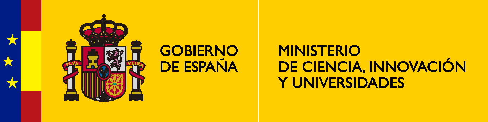
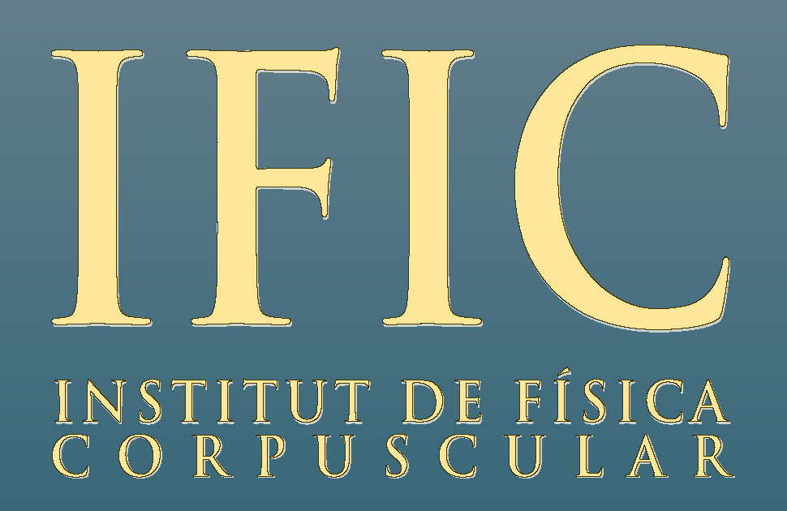
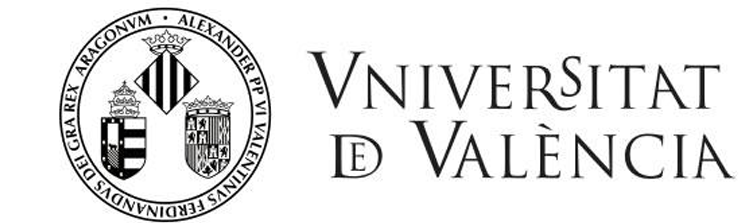
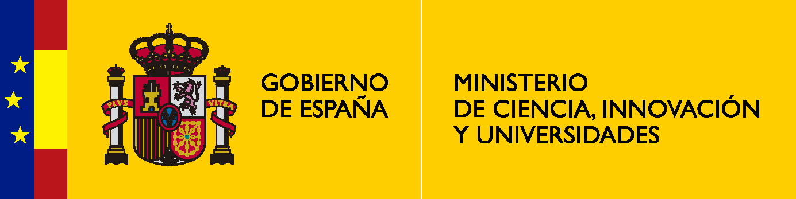
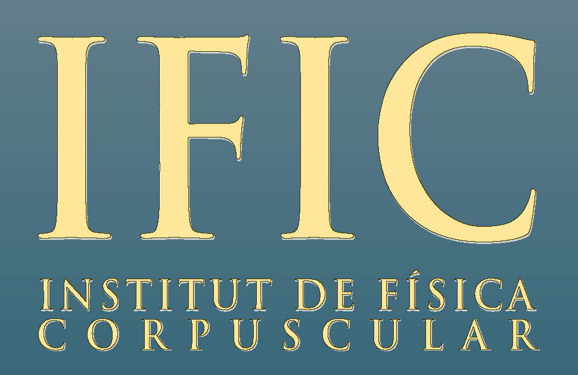
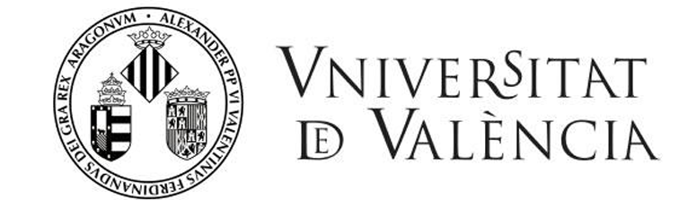

Pablo Martínez-Miravé
My CV (August 2022)
This is a short version of my CV with some higlighted points. For a full version, please check here .
Current position & Education
Oct. 2023 - present |
Postdoctoral Fellow at Niels Bohr Institute, University of Copenhagen |
Oct. 2019 - Sept. 2023 |
FPU PhD student at Universitat de València |
Oct. 2018 - Oct. 2019 |
Master in Advanced Physics (Specialised in Theoretical Physics) at Universitat de València |
Sept. 2014 - Jul. 2018 |
Bachelor in Physics at Universitat de València |
Secondments in foreign institutions
Nov. 2022 |
Niels Bohr Institute, University of Copenhagen (Copenhagen, Denmark) |
Sept. 2022 |
CFTP, Instituto Superior Tecnico (Lisboa, Portugal) |
Sept. 2021 - Dec. 2021 |
Max Plank Institut für Kernphysik (Heidelber, Germany) |
Apr. 2019 & Oct. 2019 |
Fermilab National Accelerator Laboratory (Batavia, Illinois, USA) |
Selected publications
This is a selection of publications, with several different collaborators and in a variety of topics. Authors are listed in alphabetical order. Hyperlinks to the publications are provided. For a complete list, please check Inspire hep.
Neutrino CPT violation in the solar sector G. Barenboim, P. Martínez-Miravé, C.A: Ternes, M. Tórtola. Phys.Rev.D 108 (2023) 3, 035039
Solar electron antineutrino flux: Revisiting bounds on neutrino magnetic moments and solar magnetic field. E. Akhmedov, P. Martínez-Miravé. JHEP 10 (2022) 144
Cosmology-friendly time-varying neutrino masses via the sterile neutrino portal. G.-Y. Huang, M. Lindner, P. Martínez-Miravé, M. Sen. Phys.Rev.D 106 (2022) 3, 033004
Signatures of primordial black hole dark matter at DUNE and THEIA. V. de Romeri, P. Martínez-Miravé, M. T&oactue;rtola. JCAP 10 (2021) 051
Cosmological radiation density with non-standard neutrino-electron interactions. P.F. de Salas, S. Gariazzo, P. Martínez-Miravé, S. Pastor, M. Tórtola. Phys.Lett.B 820 (2021) 136508
Signatures of ultralight dark matter in neutrino oscillation experiments.. A. Dev, P.A.N. Machado, P. Martínez-Miravé. JHEP 01 (2021) 094
2020 global reassessment of the neutrino oscillation picture. P.F. de Salas, D. V. Forero, S. Gariazzo, P. Martínez-Miravé, O. Mena, M. Tórtola, J. W. F. Valle. JHEP 02 (2021) 071
Selected contributions to workshops and conferences
For a complete list of the different contributions in conferences and workshops, including the material presented, check the full version of the CV. In this section, I will only highlight some of them.
TUM Jorunal Club/Seminar, Technische Universität München ( 21 November 2022, online).
NBIA Astroparticle Seminar, Niels Bohr Institute ( 7 November 2022, Copenhagen, Denmark).
CFTP Seminar, Instituto Superior Té(22 September 2022, Lisbon,Portugal).
Graviticulas Seminar, Facultad de Física, Pontificia Universidad Católica de Chile (25 November 2021, online).
Award-winning poster at The 28th International workshop on Weak Interactions and Neutrinos (WIN2021) (7 - 12 June, 2021, online ).
Flash talk at First EuCAPT Annual Symposium (5 - 7 May, 2021, online).
Short videos related to the posters/online talks in these workshops and conferences can be found in my YouTube channel.
Languanges and IT skills
Spanish is mother tongue but I have also received my education partially in Valencian/Catalan. I am also fluent in reading, writting and speaking both English and French.
When it comes to coding, I normally code using C/C++ or Python, although I also have a basic knowledge od Mathematica. I am also familiar with specific scientific software like GLoBES, CLASS, MontePython and BlackHawk. Other IT skills include the usage of Microsoft (or OpenOffice) offimatic software, LaTeX, Adobe Illustrator. Recently, I have started learning HTML and CSS (which I used to build this webpage).
Outreach, diversity and inclusion activities
I am strongly committed to activites promoting diversity and inclusion in Academia. I am a member of the Outreach and Diversity Comittee of the COST ACTION CA18108, "Quantum Gravity phenomenlogy in the multi-messenger approach". I also participate in the celebration of the "International Day of Girls and Women in Science", giving public talks in schools and high schools about female pioneers in the study and exploration of the Universe.
I also like to devote some time to outreach. In particular, I give several talks every year to high school students about astroparticle astronomy. Besides that, I also collaborate in the Masterclass Hands in particle physics about the MINERvA experiment.
Hobbies and leisure activities
In my free time, you might find me knitting, doing crochet or swimming.
 




